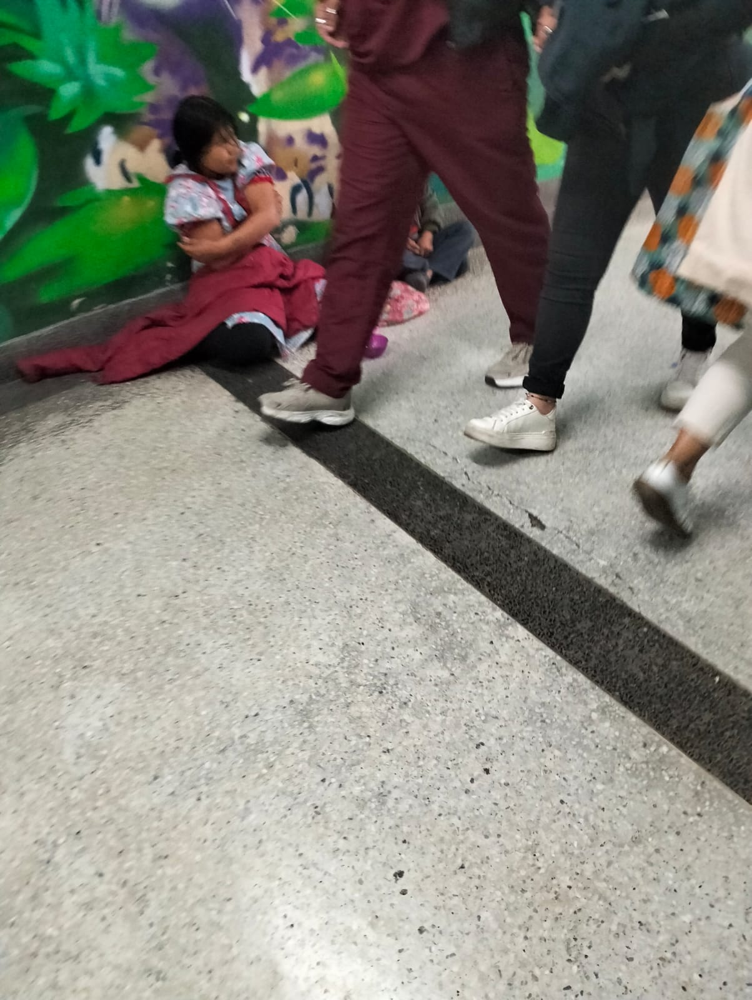
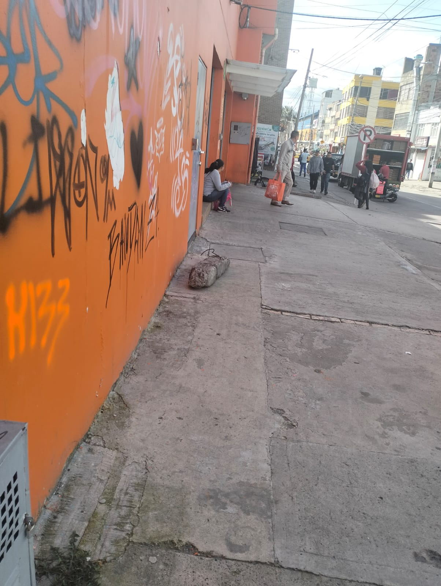
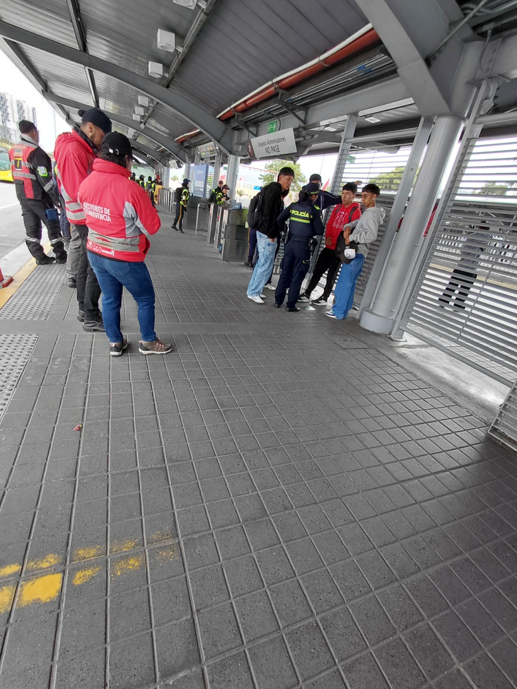
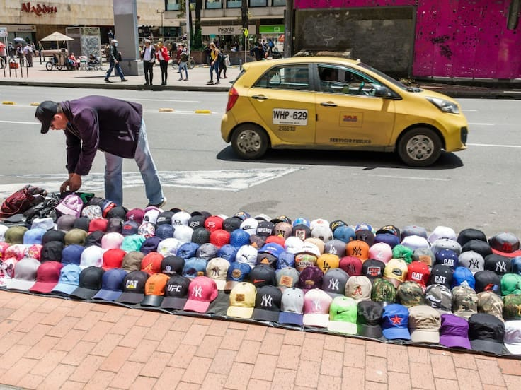
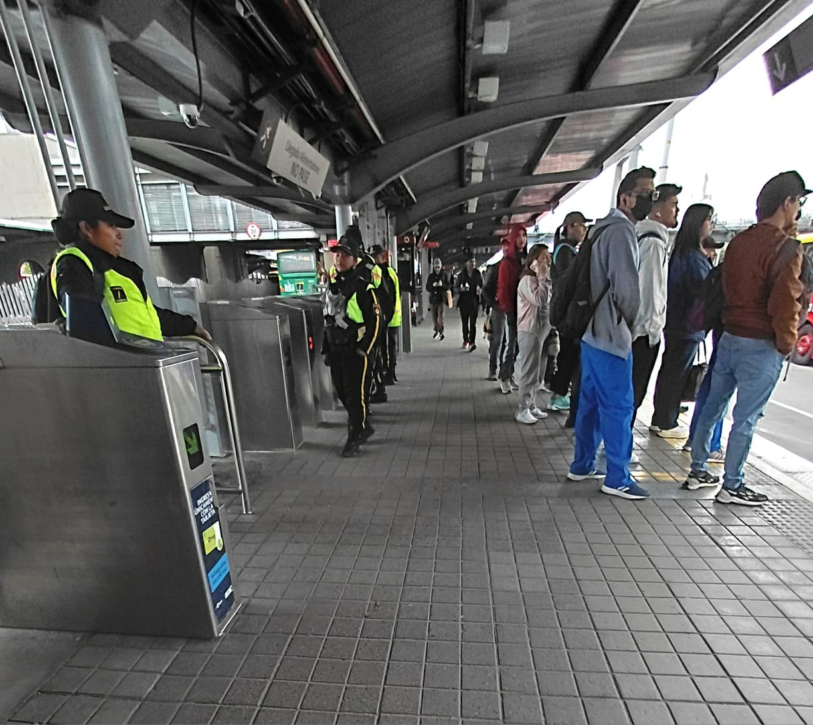

El determinismo social plantea que nosotros como individuos actúamos dentro de marcos de normas, expectativas y estructuras sociales que moldean nuestro comportamiento. Las categorías sociales, como la raza, no solo son constructos biológicos, sino también sociales y culturales, que influyen en el acceso a oportunidades, la movilidad y las relaciones cotidianas.
El determinismo cultural enfatiza cómo la cultura —valores, normas y prácticas compartidas— condiciona la vida de los individuos, incluso más allá de su voluntad. Esto implica que los estereotipos raciales y las normas culturales determinan la identidad de los grupos y cómo la sociedad percibe y espera que actúen sus miembros.
💡 Reflexión personal: En mi experiencia, incluso en contextos educativos o laborales, los prejuicios raciales y culturales influyen en cómo evaluamos a los demás y en las oportunidades que se les otorgan, muchas veces de manera inconsciente.
Al analizar mi propio marco cultural, identifico preconceptos internalizados, como la creencia de que la movilidad social depende solo del esfuerzo individual. Reconocer estas influencias permite comprender que la agencia individual existe, pero siempre dentro de estructuras sociales y culturales que condicionan las oportunidades y expectativas de los individuos. Esta reflexión evidencia que la investigación en psicología no puede ser neutral ni desvinculada de los contextos culturales: nuestro propio posicionamiento influye en lo que observamos y cómo lo interpretamos.
Integrar la teoría con la reflexión personal permite una psicología más ética, inclusiva y crítica, capaz de comprender y respetar la diversidad social.
Los estereotipos son percepciones exageradas y simplificadas sobre personas o grupos que comparten ciertas características. Funcionan como marcos cognitivos que guían cómo interpretamos la información social y afectan nuestras decisiones y relaciones.
El prejuicio es una actitud usualmente negativa hacia miembros de un grupo basada únicamente en su pertenencia a ese grupo. Por ejemplo, alguien con prejuicio evaluará a los miembros del grupo negativamente solo por formar parte de él.
La discriminación se refiere a las acciones negativas hacia los grupos que son víctimas del prejuicio. Esto incluye exclusión, trato desigual o limitación de oportunidades.
Reflexionar sobre estereotipos y prejuicios permite identificar cómo nuestras creencias internalizadas influyen en la percepción de los demás. Por ejemplo, pensar que ciertos comportamientos son “naturales” según la edad, género o religión puede limitar la comprensión de la diversidad individual y colectiva, y reforzar desigualdades sociales.
En definitiva, la reflexión sobre los estereotipos fortalece una psicología que respeta la pluralidad y promueve inclusión y justicia social.
Las preconcepciones de clase son las ideas, creencias y experiencias previas que los estudiantes traen consigo y que influyen en su aprendizaje de un nuevo tema. Estas ideas pueden ser correctas o incorrectas, pero tienen un significado personal y actúan como una “lente” que filtra y moldea la comprensión de la nueva información.
Estas concepciones se forman a partir de experiencias personales, culturales, familiares o escolares anteriores. El conocimiento de las preconcepciones de los alumnos es muy relevante para la construcción del conocimiento, ya que los estudiantes aprenden sobre la base de lo que ya conocen. Al incorporar nueva información, activan conocimientos previos, establecen conexiones e interpretan el nuevo contenido según su experiencia.
💡 Reflexión personal: Las preconcepciones me hacen pensar en la importancia de reconocer que cada estudiante llega al aula con una historia y una manera particular de entender el mundo. El aprendizaje implica cuestionar y reconstruir lo que creíamos saber.
Reconocer mis propios preconceptos me ha permitido comprender que, como futura profesional de la psicología, mi manera de interpretar los fenómenos humanos está mediada por mis experiencias, valores y contexto cultural. Comprender esto me lleva a mantener una actitud crítica y abierta frente a mis propias creencias, entendiendo que mis interpretaciones no son universales, sino situadas.
Reconocer la propia identidad dentro del proceso psicológico no debilita la objetividad, sino que la humaniza y la hace más responsable socialmente.
Hablar de género es hablar de cómo la sociedad define lo que significa “ser hombre”, “ser mujer” o pertenecer a otra identidad. Estas ideas no nacen de la biología, sino de construcciones sociales, culturales e históricas que asignan comportamientos, emociones y responsabilidades diferentes según el sexo con el que nacemos.
Desde que somos pequeños, aprendemos que hay colores, juegos, profesiones y maneras de comportarse “propias” de cada género. Sin embargo, estas normas limitan la libertad individual y generan desigualdad. Según la filósofa Judith Butler (1990), el género no es algo que somos, sino algo que hacemos: una actuación social que repetimos hasta que parece natural.
💡 Reflexión: Entender el género como una construcción social nos invita a cuestionar las normas que naturalizamos. Nos recuerda que podemos actuar, sentir y existir más allá de los límites impuestos por la cultura.
Esta galería utiliza la metodología de Foto Voz para reflexionar sobre cómo los fenómenos sociales como la clase, la raza, el género y la desigualdad influyen en la vida cotidiana. Cada fotografía fue tomada en espacios urbanos y analizada desde el determinismo social y cultural, los estereotipos y la autoidentificación del observador.

Al observar esta imagen, me cuestiono cómo la sociedad normaliza la desigualdad al punto de volverla parte del paisaje cotidiano. Una mujer, posiblemente perteneciente a una comunidad indígena, aparece sentada en el suelo mientras decenas de personas pasan a su lado sin mirarla. Esta escena evidencia cómo la raza, la clase y el origen cultural siguen determinando quién recibe atención y quién es ignorado. El determinismo social se refleja en la forma en que ciertos grupos quedan relegados a espacios marginales, mientras el resto continúa su rutina sin interrupciones. Al reflexionar, reconozco que también he aprendido a “no ver” estas desigualdades porque forman parte del entorno urbano. Esta autoidentificación me muestra cómo mis preconceptos influyen en mi interpretación y en mi capacidad de empatizar.

Esta imagen muestra a una mujer sentada sola en una acera, rodeada de grafitis y un entorno urbano deteriorado. El espacio físico se convierte en un marcador social: ciertos cuerpos terminan en ciertos lugares según su posición económica o sus posibilidades laborales. Desde el determinismo cultural, comprendo que las oportunidades no se distribuyen equitativamente y que la sociedad asigna trayectorias difíciles de romper. Los estereotipos asociados a la pobreza generan rechazo e indiferencia. Al analizar mi mirada, noto que también relaciono estos espacios con abandono, lo cual revela mis preconceptos. Esta fotografía me invita a cuestionar por qué algunas vidas se consideran “normales” en entornos de vulneración y cómo mi historia personal influye en mi interpretación.

Esta imagen muestra cómo las dinámicas cotidianas están organizadas por normas y roles previamente establecidos. Las figuras de autoridad regulan el flujo de las personas, quienes obedecen las indicaciones sin cuestionarlas. Desde el determinismo social y cultural, esta escena evidencia que gran parte de nuestras acciones responden a expectativas sociales aprendidas desde la infancia. Reflexionar sobre esta situación me hace consciente de cómo acepto estas reglas sin analizarlas, porque forman parte de mi visión del orden. Reconozco que mi interpretación está mediada por mis experiencias y por cómo fui socializado para respetar la autoridad, lo cual influye en mi lectura de la escena.

Esta fotografía refleja una forma común de empleo informal en la ciudad: la venta ambulante. El hombre que organiza las gorras no solo busca ingresos, sino también reconocimiento en un sistema que excluye a quienes no acceden a empleos formales. El determinismo social se evidencia en cómo la clase condiciona las oportunidades laborales. Los estereotipos sobre los vendedores ambulantes — asociados al desorden o a lo ilegal— influyen en la forma en que la sociedad los percibe. Al observar esta escena, noto mis propios preconceptos: a veces he asociado la informalidad con caos, sin pensar en las historias detrás de ella. Reconocer estos sesgos me permite analizar con mayor humanidad y responsabilidad.

Esta fotografía muestra a un grupo de personas esperando en fila para ingresar al transporte público. Aunque parece una escena simple, representa cómo la cultura moldea nuestras acciones. Hacer fila, esperar en silencio y seguir señales no son decisiones espontáneas, sino comportamientos aprendidos. Desde el determinismo social, puedo ver cómo estas normas organizan la vida pública y cómo las repetimos automáticamente. Al observar la escena, reconozco que yo mismo sigo estas reglas porque forman parte de mi idea del orden. Esta reflexión muestra cómo mi interpretación está influida por mi historia personal y mis experiencias, reforzando la importancia de la autoidentificación en el análisis social.